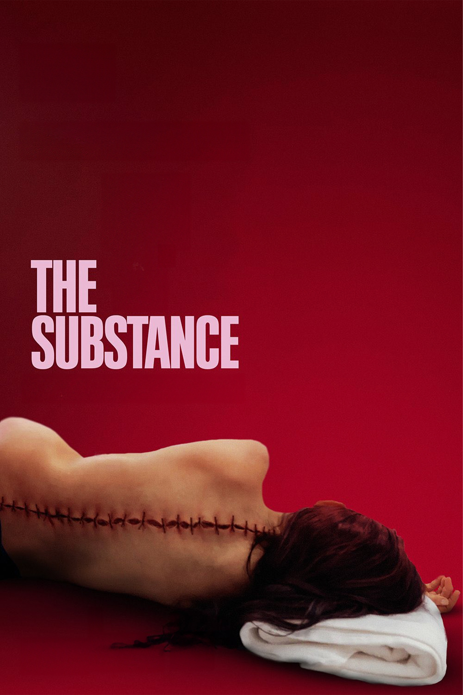

The Substance
Director: Coralie Farget • Year: 2024 • Genre: Body Horror / Drama / Sci-Fi • Runtime: 2h 21m
Review
The Substance was a fun and incredibly interesting movie. There is a lot going on here, and honestly, the more I thought about it after watching it, the more I found to unpack. It's a story about getting older, losing your youth, and just how far someone might be willing to go to hold on to that youth for as long as possible. Unfortunately, it's also a movie that I think is a little slow at times and eventually goes too far off course in the end, and those are the biggest things holding it back for me.
Story & Characters
Demi Moore plays Elisabeth Sparkle, an aging celebrity who has reached a point where the fame, attention, and admiration she once had are starting to disappear. She feels empty. She's getting older, her stardom is starting to fade out, and people aren't idolizing her the way they once did. She is no longer relevant in the way she used to be. Then she discovers the Substance, which allows her to create a younger, more perfect version of herself named Sue, played by Margaret Qualley.
The catch is that they have to share their time. One gets seven days, then the other gets seven days.
And, of course, that doesn't go according to plan.
What I really liked about the story is how it points out something very human: as we get older, we really don't want to let go of our youth. We want to hold onto it for as long as we possibly can. Elisabeth is willing to pay an enormous price to do that without really understanding what that price is going to be.
It actually gave me a little bit of The Picture of Dorian Gray. Instead of a portrait carrying the consequences of somebody desperately trying to preserve their youth, here we essentially have a living version of Elisabeth's youthfulness. And eventually that youthful version starts stealing from her because she gets greedy.
But Elisabeth gets greedy too.
That's what makes it interesting. Neither one is completely innocent.
One thing that really stood out to me was the billboard outside Elisabeth's living room. She's constantly being reminded of Sue and watching this younger version of herself become more and more successful. Every time Elisabeth comes back, she has to look outside and see that her youthful self is out there living the life she wants.
But Elisabeth herself isn't really getting any of it.
That's something I kept thinking about. What exactly does the older Elisabeth actually gain from this deal?
When Sue is out living this incredible life, Elisabeth is basically in a comatose state. It's not like Elisabeth gets to experience being young again herself. She wakes up afterward and sees what Sue has accomplished. She almost seems to remember some of it, and obviously they're supposed to be the same person, but there is still this separation between them.
It makes the whole deal feel like a terrible trade-off.
Elisabeth sacrificed herself so that another version of herself could live the life she desperately wanted.
There's also something about Sue that made me think about youth in general. She has youth without the wisdom that comes from getting older. She takes and takes from Elisabeth without really appreciating what Elisabeth is sacrificing for her.
It reminded me of how, when we're young, we sometimes take advantage of our parents, grandparents, or other people who sacrifice for us. I'm not saying we always do it willingly, either. Sometimes we don't even realize we're doing it. It's not until we get older ourselves that we can look back and understand what somebody else sacrificed for us.
Sue is literally sucking Elisabeth dry so that she can continue living the life she wants.
Whether the movie intended that interpretation or not, that's something I took away from it.
The movie also deals heavily with sexuality and the way people are used. You can definitely tell that director Coralie Fargeat is coming at some of this from a feminist perspective, particularly with the male manager and the way Elisabeth and Sue are treated.
What's interesting, though, is that Sue wants to be idolized. She wants people looking at her. She wants that attention and sexuality. So there's almost a weird relationship between being used and wanting to be desired.
Dennis Quaid is great here as this asshole-ish manager who basically wants to make money. Personally, I didn't really see his character as someone trying to use these women sexually for himself as much as I saw somebody willing to use another human being for his own personal gain.
And that's just human nature.
As human beings, we can be perfectly willing to use somebody else if there's something in it for us. Elisabeth is valuable to him while she's making him money. When she's no longer valuable, he wants somebody younger who can make him more money.
Cinematography & Visual Style
The movie itself does an incredible job of making you uncomfortable.
There are these extreme close-ups of mouths, faces, bodies, food, and these grotesque images where the camera gets so close that you almost want to move away from the screen. Even moments that are supposed to be sexualized become strangely uncomfortable because you're so up close and personal with everything.
And I'm sitting there thinking that, as a male viewer, some of these shots should theoretically be enticing. Instead, the way they're framed actually makes me uncomfortable.
That's impressive.
The body horror is also fantastic. It's grotesque and disturbing, but somehow there are moments where it becomes comedic at the same time. You're horrified by what you're looking at while also realizing how completely ridiculous the situation has become.
But probably my favorite thing about The Substance is the cinematography.
This movie is beautifully shot.
There were so many moments where I was looking at the composition and thinking, man, if you took a photograph of that exact frame, it would be something worth admiring on its own.
The long shots through the hallway are fantastic. The bathroom where Elisabeth takes the Substance is beautifully framed. There's so much depth in some of these shots, and the filmmakers really use the environment around the characters rather than simply pointing a camera at the actors.
For me, camera work like that makes a movie more engaging because I start wondering what they're going to do next. How are they going to frame the next shot? Where are they going to put the camera? What colors are they going to use?
And the use of color in this movie is phenomenal.
When we're with the older Elisabeth, everything feels darker, grimier, colder, and lonelier. You can feel that isolation through the image.
Then you get Sue.
Suddenly everything is vibrant, bubblegummy, poppy, bubbly, sexualized, and full of youth and life.
The movie visually transforms along with the character.
That's the kind of cinematography I love. Every part of the film makes you feel the story instead of just telling you the story.
The colors, composition, camera movement, camera positioning, performances, editing, timing, and pacing all have to work together. When filmmakers get that right, you don't just understand what a character is experiencing. You feel it.
Pacing & Structure
Unfortunately, pacing is also one of my biggest problems with The Substance.
It's a tad too slow.
There are definitely places where I think the movie could have tightened things up without losing anything important. As much as I enjoyed the story and loved watching what the filmmakers were doing visually, there were moments where I could feel the runtime.
Ending
My other major issue is the ending.
There is a moment toward the climax where Elisabeth is getting ready to kill Sue. She finally sees what this obsession has turned her into. She's destroyed herself trying to preserve something she was never going to be able to keep forever.
And then she realizes she can't live without Sue.
For me, that's where the movie should have started bringing everything to an end.
That's the emotional climax.
Instead, the movie keeps going.
We get the monstrous mutation, everything becomes more grotesque, everything gets crazier, and eventually it just feels like the movie derails and becomes chaotic.
It gets too bizarre. Too off-kilter.
I don't think the movie needed to keep trying to outdo itself. It had already made its point.
By pushing everything further and further, I actually think it weakened what had been a really powerful story about an aging woman trying to find meaning after her stardom and youth had begun leaving her behind.
Final Thoughts
That's ultimately what makes The Substance work for me.
Underneath all the blood, nudity, sex, grotesque imagery, and body horror is a woman who feels like she's losing everything that once gave her value. She doesn't have the fame she once had. She doesn't have people idolizing her. She doesn't have that appreciation anymore. She feels empty.
And she's willing to do almost anything to get it back.
She just doesn't understand what it's going to cost her.
There is a lot to unpack in The Substance, and I think that's part of what makes it so interesting. It's about youth, aging, vanity, greed, fame, sexuality, exploitation, selfishness, and our inability to accept that certain parts of our lives eventually have to end.
Visually, I thought it was fantastic. Demi Moore is fantastic. Margaret Qualley is fantastic. Dennis Quaid plays an asshole extremely well. The cinematography and composition are some of my favorite parts of the entire movie, and the body horror manages to be disgusting, horrific, and occasionally hilarious.
But I can't overlook the pacing or that final act.
The movie is a little too slow, and once it reaches what I thought was the perfect emotional climax, it keeps going until it feels like it has gone completely off course.
There's a fantastic movie inside The Substance. I just wish it had known when to stop.
Rating
6/10
Audience Feedback
I’d love to hear your feedback and thoughts on the film. Email me at daniel@nobodycritics.com.